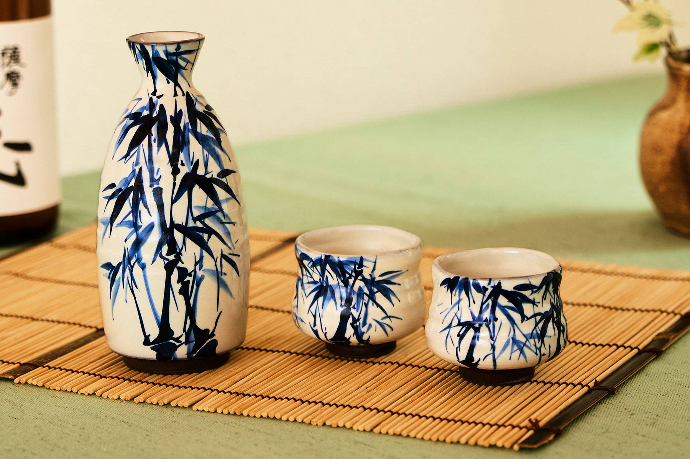
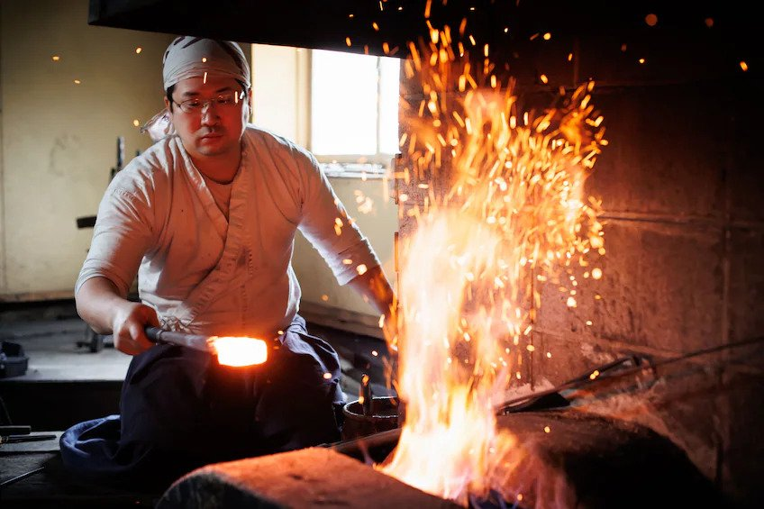
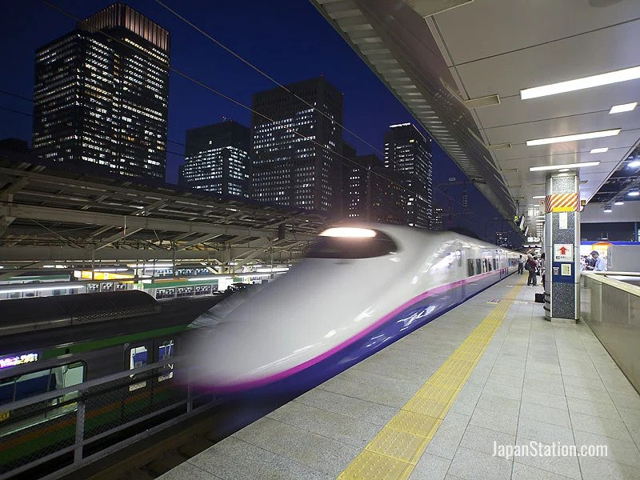
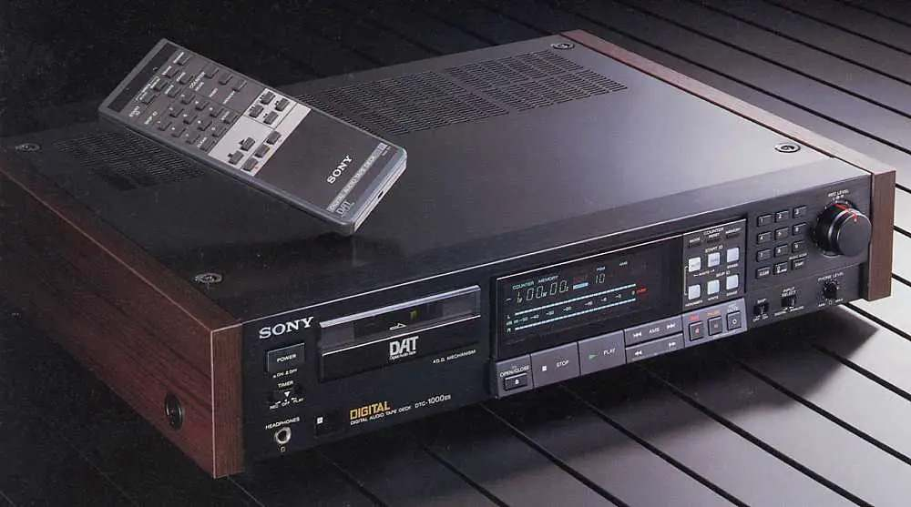

Japán hagyományos és modern ipara egyaránt az ország gazdasági erejét és kulturális gazdagságát tükrözi. A hagyományos iparágak, mint például a kerámia-, textil- és kézművesipar, mélyen gyökereznek a japán kultúrában, és a mesterséges precizitás, a minőség és az esztétikum iránti elkötelezettség jellemzi őket.
Ezen kívül a modern ipari ágazatok, mint az autógyártás, az elektronikai ipar és a szórakoztató elektronikai termékek gyártása, meghatározó szerepet játszanak a világpiacokon. Japán ötvözi a hagyomány és a modern technológia legjavát, és ezáltal folyamatosan újít, miközben tiszteletben tartja az ősi mesterségek és tradíciók értékeit.
A hagyományos japán ipar
Kezdjük talán a legelején...
A középkori Japán kézműves ipara hatalmas sokszínűséget és gazdagságot mutatott, melyet a korabeli technológia, művészet és kulturális örökség határozott meg. A japán kézművesség rendkívül fejlett volt ebben az időszakban, és számos különböző területen virágzott. Ezek a kézműves iparágak nemcsak a gyakorlati szükségleteket elégítették ki, hanem erősen kapcsolódtak a japán kultúrához, valláshoz és művészethez is. A középkori japán kézművesség kiemelkedő példái máig inspirálják és mélyítik a megértést azokról a művészeti és technikai tradíciókról, amelyek azóta is élik tovább Japánban.
Kerámia és porcelán: Az egyik legismertebb japán kézműves műfaj a kerámia és porcelán készítés volt. Különösen híresek voltak az azuchi-momoyama korszakban (1568-1600) készült Imari és Kutani porcelánok, amelyek festésmódja, díszítése és minősége magas szintet képviselt.
Textilipar: A középkori Japánban a textilipar is jelentős volt. A selyemgyártás és a hímzés különösen kiemelkedő volt ebben az időszakban. A kimono, a hagyományos japán ruházat, elkészítése és díszítése hatalmas szakértelmet és művészi érzéket igényelt.
Fémek és kardkészítés: A középkori Japán híres volt a kardkészítésről is. A katanák (japán samuráj kardok) elkészítése egyedülálló kézműves tudást és technikákat követelt meg a kardkovácsoktól, akik mesterei voltak az acél megmunkálásának és a kardok készítésének.
Papírművesség: A papírművesség is fontos szerepet játszott a középkori japán kézműves iparban. A japán papír, vagy washi, készítése és díszítése is kiváló szaktudást igényelt, és számos hagyományos japán művészeti forma része volt, például a hagyományos japán festészetben és az origami (hajtogatott papír) alkotásokban.
A modern japán ipar
A modern japán ipar az autógyártásban, közlekedésben és elektronikai iparban is jelentős sikereket ért el, és meghatározó szereplővé vált a világpiacokon.
Autógyártás (pl. Toyota): A japán autóipar az egyik legismertebb és legbefolyásosabb a világon. Vállalatok, mint a Toyota, Honda, Nissan, Mitsubishi és mások, nemcsak a minőség és megbízhatóság tekintetében állnak élen, hanem az innováció, fenntarthatóság és hatékonyság terén is. A Toyota például jelentős szerepet játszik a hibrid és elektromos járművek piacán, a környezetbarát technológiák és gyártási módszerek terén.
Shinkansen (gyorsvasút): A Shinkansen, más néven "bullet train", az egyik legfejlettebb és leggyorsabb vasúthálózat a világon. Ez a japán gyorsvasúti rendszer kimagasló sebességgel és pontossággal szolgálja ki az utazókat Japán szerte. A Shinkansen hálózat rendkívüli sebességgel közlekedik. A legújabb vonatok akár 320 km/h sebességgel is haladnak, ami lehetővé teszi a gyors és hatékony utazást az ország különböző részei között. Ez a sebesség és hatékonyság hozzájárult a japán gazdaság fejlődéséhez és a régiók közötti kapcsolatok erősítéséhez. A Shinkansen hálózat nagy hatékonysággal működik, kiváló technikai és biztonsági megoldásokat alkalmazva. A Shinkansen vasúthálózat nem csupán közlekedési eszközként funkcionál, hanem ikonikus szimbóluma is Japánnak. A világon egyedülálló pontossága, biztonsága és hatékonysága miatt a Shinkansen vonatok a japán technológiai fejlettség és az infrastrukturális kiválóság egyik megtestesítői, és ma már a turisták körében is népszerű utazási célként szolgálnak, hogy felfedezzék Japán különböző tájait és városait.
Elektronikai ipar (pl. Sony): Japán híres a világszínvonalú elektronikai termékeiről és vállalatairól. Cégek, mint a Sony, Panasonic, Sharp és mások, nagyban hozzájárultak az elektronikai termékek, például televíziók, háztartási gépek, audio- és videotechnológia fejlődéséhez. Ezek a vállalatok nemcsak kiváló minőségű termékeket gyártanak, hanem az innováció terén is vezető szerepet töltöttek (és töltenek) be, például az új kijelzőtechnológiák, hangzás és képminőség terén.
Ezen iparágak mindegyike jelentős hatással volt a japán gazdaságra és a világgazdaságra is. Japán ipari eredményei a technológia, minőség és innováció terén, valamint a fenntartható megoldásokban való elkötelezettségük révén hozzájárultak az ipar fejlődéséhez és a modern világ alakulásához.